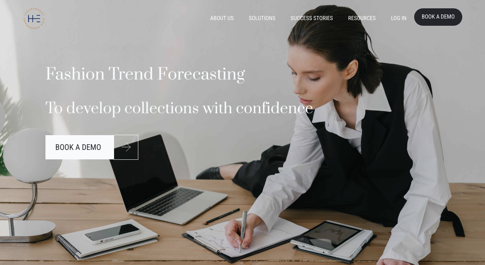
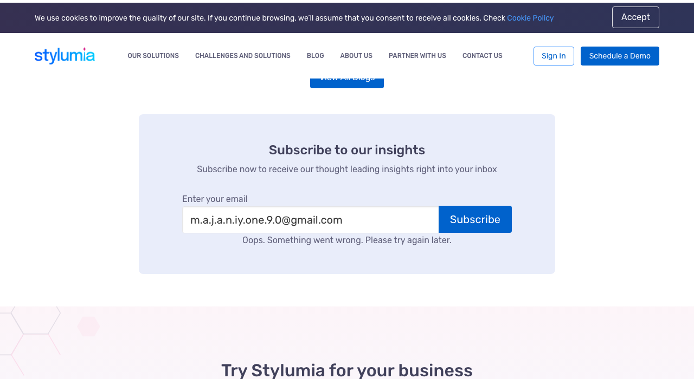
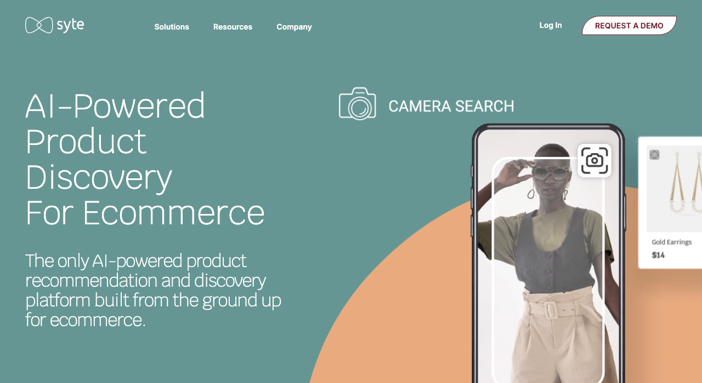

Demand Intelligence Dashboard
Real-time analytics on which designs, colours and sizes are most tried on and saved. Enables data-driven decisions on what to produce, at what volume, and in which markets.
Virtual Try-On (VTO)
Third-party API integration — no proprietary build required. Production-ready options: True Fit (AI sizing across 82M shoppers, 30,000 brands — Shopify Plus Certified), 3DLOOK (80+ body measurements from 2 photos at 96–97% accuracy), MySize/Naiz Fit (14% return rate drop, 5.7× conversion lift in live deployments). For TF's pre-order model, fit confidence removes the primary reason consumers hesitate before committing. Sizing technology deep dive →
Style & Size Profile
A one-time setup capturing measurements, colour palette, fabric preferences, and style archetype. Powers personalised recommendations across every designer on the platform — recommendation quality compounds with usage.
Early Access Premium Tier
Paid consumer subscription unlocks virtual try-on of unreleased prototypes, co-creation voting rights, and first-access pre-orders at a discount. Converts casual browsers into committed community members.
Data as an Additional Revenue Layer
Anonymised demand signals — top styles by region, real size distributions, colour trend velocity — packaged as premium analytics reports for fashion brands, investors, and industry analysts. Recurring B2B revenue independent of transaction volume.

| What it does | Lets creators design and sell fashion items using licensed brand IP; auto-distributes royalties when designs are sold or remixed |
| Founded | 2021 — New York, NY |
| Funding | $10M seed · Accel, Polychain, Pantera, Jump Crypto |
| Creators | 3,000+ beta users |
| GMV | Unknown |
| Revenue | Undisclosed — growth stage |
| Revenue growth | Unknown |
| Brands | Adidas, Balmain, Crocs, Champion, Ralph Lauren, Vans, Smiley, Pangaia |
| Model | Monthly subscription + commission on creator sales |
| Commissions | Basic plan 10% · Premium plan 8% — charged on creator sales in addition to subscription fee (source: Perplexity PDF §7) |
| Geography | US (NY/SF) — global brand partners |

| What it does | Affiliate commerce platform connecting fashion creators to brands and shoppers via shoppable links; takes commission on each sale |
| Founded | 2011 — Dallas, TX |
| Funding | ~$562M total raised · $2B valuation (SoftBank led $300M round, 2021) |
| Creators | 150,000+ |
| GMV | $3B+ annually |
| Revenue | Undisclosed |
| Revenue growth | Mature — stable |
| Brands | 5,000+ (mass market + premium) |
| Model | Affiliate commissions + brand SaaS fees + managed campaign fees |
| Commissions | Fashion 5–15% · Beauty 5–15% (brand-set rates within range — source: Perplexity PDF §9) |
| Geography | 100+ countries · EU hubs: UK, Germany |

| What it does | Creator commerce platform — shoppable storefronts, brand campaign tools, and full attribution showing exactly which creator drove each sale |
| Founded | 2020 — New York, NY |
| Funding | $169M total raised · $1.5B valuation (Bessemer, Bain, Avenir, Menlo) |
| Creators | 185,000+ curated tastemakers |
| GMV | $1B+ annually |
| Revenue | ~$80M (2025 est. Sacra) · profitable since 2024 |
| Revenue growth | ~200% YoY (2025, Sacra) |
| Brands | 1,200+ premium (Rhode, Net-a-Porter, Gucci, West Elm) |
| Model | Affiliate commissions + brand SaaS (Lookbooks, Opportunities tools) |
| Commissions | Fashion 8–20% · Beauty 15–25% — higher than LTK across every category (source: Perplexity PDF §9) |
| Geography | US-first · UK expansion 2025 |

| What it does | Scans social media images daily using computer vision to detect which fashion aesthetics (silhouettes, colours, motifs) are gaining velocity — before they peak |
| Founded | 2013 — Paris, France |
| Status | Acquired Nov 2024 by Luxurynsight — no longer independent |
| Funding | ~$5.7M total raised ($4.4M Series A 2019 · €4M round Sep 2025) |
| Clients | Count undisclosed |
| Revenue | Undisclosed |
| Revenue growth | Undisclosed |
| Model | B2B SaaS — annual brand subscriptions (now under Luxurynsight) |
| Cost to TF | Not publicly disclosed — pricing on request. Enterprise tier; likely out of range for early-stage TF. |
| Technology | CV + NLP on Instagram & TikTok; 3M images/day |
| Key clients | Louis Vuitton, Dior (LVMH), Adidas, Kontoor Brands |
| Geography | Paris HQ · US, Europe, MENA |

| What it does | Consumer intelligence platform — uses AI and social listening to identify which style DNA (colour, silhouette, occasion) is gaining demand traction before it reaches mainstream search |
| Founded | 2015 — Bengaluru, India |
| Funding | Seed rounds (2020, 2022) — Series A unconfirmed; total undisclosed |
| Clients | Count undisclosed |
| Revenue | Undisclosed |
| Revenue growth | Undisclosed |
| Model | B2B SaaS — consumer intelligence platform |
| Cost to TF | Not publicly disclosed — pricing on request. Mid-market SaaS tier; more accessible than Heuritech but still B2B enterprise pricing. |
| Technology | Generative AI + social listening; style DNA extraction from UGC |
| Key clients | Bestseller Group (Jack & Jones, Vero Moda), Aditya Birla |
| Geography | India HQ · US and Europe expansion |

| What it does | Visual AI for e-commerce — consumer uploads a photo to find matching products ("shop the look"), plus AI product tagging and style-based discovery for retailers |
| Founded | 2015 — Tel Aviv, Israel |
| Status | Acquired Dec 2024 by Pereg Ventures / Magma / MizMaa consortium |
| Funding | $30M Series C · $71M+ total raised (Viola, Storm Ventures, Naver, LG Technology) |
| Clients | Count undisclosed |
| Revenue | Undisclosed |
| Revenue growth | Undisclosed |
| Model | B2B SaaS + API — visual AI for e-commerce discovery |
| Cost to TF | Not publicly disclosed — API pricing on request. Per-query model likely at scale; SaaS base fee for access. |
| Technology | Visual search, "shop the look", AI product tagging, style matching |
| Key clients | PrettyLittleThing, Marks & Spencer, Farfetch |
| Geography | Tel Aviv HQ · US, Europe, APAC |
| What it does | Curated marketplace for 2,000+ independent designers — fashion (83%), jewellery, beauty, homeware — no inventory held; brands self-manage listings |
| Founded | 2010 — London, UK (founders: George & Henry Graham) |
| Funding | ~£4.5M Series A (2019, Guinness Asset Management); ~$20M total per media; B Corp certified |
| Creators | 2,000+ independent designer brands; ~300 applications per month |
| GMV | ~$95M (2024) |
| Revenue | ~$50M (2024) — second consecutive profitable year |
| Revenue growth | US grew from $3M (2019) to $45M+ (2024); US now ~50% of total sales |
| Brands | N/A — designers are the product (no separate brand client tier) |
| Model | Monthly designer subscription + undisclosed % commission per sale; stores in London, NYC, LA |
| Commissions | Not publicly disclosed — set individually per brand in seller dashboard. Subscription: $375/month per brand (source: Modern Retail, W&B seller terms) |
| Geography | London HQ · NYC (SoHo, since 2017) · LA (West Hollywood, since 2022) — US ~50% of sales |
| What it does | Mobile-first social fashion marketplace where Gen Z creators sell secondhand, vintage, and independent pieces via community-driven discovery |
| Founded | 2011 — originally Roncade, Italy; HQ moved to London 2012 |
| Funding | ~$105M VC pre-acquisition (Balderton, General Atlantic); acquired by Etsy $1.625B (2021); being sold to eBay ~$1.2B (announced Feb 2026) |
| Creators | 3.2M active sellers (2024, +41% YoY) |
| GMV | $789M (2024, +31.6% YoY) — approaching $1B |
| Revenue | ~$85M est. (2024, secondary estimate — not separately disclosed by Etsy) |
| Revenue growth | GMV +31.6% (2024); US GMV +~60% (2024) — Q4 2024 highest GMV since Etsy acquisition |
| Brands | N/A — peer-to-peer; 7.0M active buyers (2024, +38% YoY) |
| Model | Buyer marketplace fee + payment processing + optional Boosted Listings; seller fees eliminated in US/UK Jul 2024 |
| Commissions | Sellers US/UK: 0% (since Jul 2024) · Buyers: up to 5% + $1 per transaction · Outside US/UK sellers: 10% · Boosted Listings: 8–12% (source: Depop newsroom, Help Centre) |
| Geography | UK origin · US fastest-growing (~60% GMV 2024) · Global · ~90% of buyers under 34 |